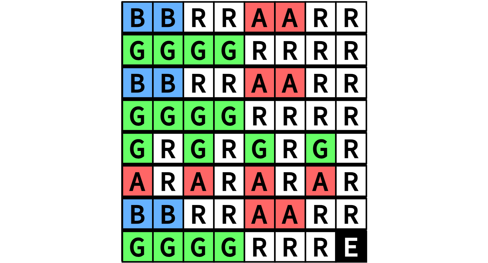

Lab 3 (Parts C & D) Optional Add-On: Custom Song
Complete After Parts C and D
This section is an optional add-on to the main lab, and is meant for students who have already completed Parts C and D. If you have not already completed Parts C and D, please go back and do so first.
As part of Lab 3, students have the option to play a song of their creation/choosing on the FPGA. Students will need to modify the provided music memory to encode the notes they wish to play, then re-compile their design for the FPGA.
1. Adding a Song to Memory
For this lab, the memory that stores music notes is implemented in
lab3-music/hw/MusicMem_RTL.v. Open this file and look inside the
MusicMem_RTL module. You should see a large statement that looks like:
always_comb begin
case( memreq_addr )
//----------------------------------------------------------------
// Song 0
//----------------------------------------------------------------
16'h0000: memresp_data = NOTE_B;
16'h0004: memresp_data = REST;
16'h0008: memresp_data = NOTE_A;
16'h000C: memresp_data = REST;
16'h0010: memresp_data = NOTE_G;
16'h0014: memresp_data = REST;
16'h0018: memresp_data = NOTE_A;
16'h001C: memresp_data = REST;
...
16'h00FC: memresp_data = SONG_END;
//----------------------------------------------------------------
// Song 1
//----------------------------------------------------------------
16'h0200: memresp_data = NOTE_B;
16'h0204: memresp_data = REST;
...
endcase
if ( !memreq_val )
memresp_data = 32'b0;
end
Here, we can see that our memory is implemented as a (rather large)
look-up table. The notes are defined as NOTE_G up to NOTE_F, with
REST signifying to play no sound. When MusicMem_RTL gets a request,
it checks the address given by memreq_addr, and sets memresp_data to
be the corresponding note. You'll see that the memory range for each song
ends with SONG_END, to signify to our player that the song is finished.
As part of this memory, we've left a range (corresponding to Song #2) for
you as the student to implement a song of your choice, if you'd like. In
MusicMem_RTL, you can find the following section:
//----------------------------------------------------------------
// Song 2
//----------------------------------------------------------------
// OPTIONAL: Replace note values to make a new song!
16'h0400: memresp_data = SONG_END;
16'h0404: memresp_data = SONG_END;
16'h0408: memresp_data = SONG_END;
16'h040C: memresp_data = SONG_END;
16'h0410: memresp_data = SONG_END;
16'h0414: memresp_data = SONG_END;
16'h0418: memresp_data = SONG_END;
16'h041C: memresp_data = SONG_END;
...
You can see that each note in the song is currently SONG_END. To write
a custom song, you should replace as many of these values as needed with
the notes for your song. Keep in mind that notes will lead directly into
each other; if you want a break between notes, you will have to include
a REST between them
Implement a Song
Using the template above, implement a new song as Song #2 in the music
memory. If you don't have a song in mind, you can use
"Hot Cross Buns", given below and starting "B", "B", "R", "R", ...
(with R representing REST, and E representing SONG_END):

2. Playing Your Custom Song
Once you've created your custom song, you can re-synthesize your overall
design (including MusicMem_RTL.v) and put your design on the FPGA, as
described in the main handout. From there, use the switches to select
Song #2. You should hopefully be able to hear your song being played by
your music player!